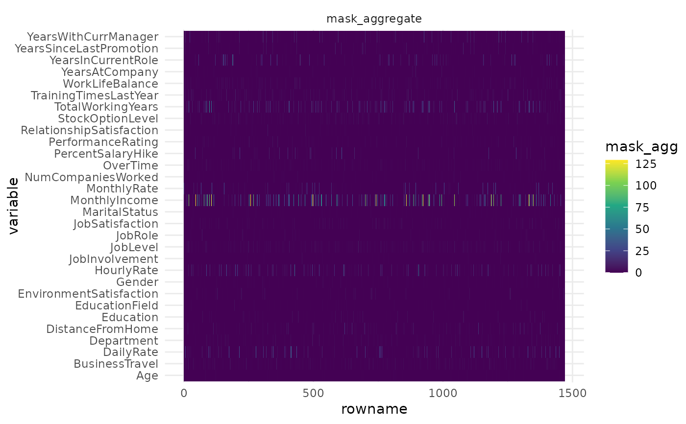

Plot tabnet_explain mask importance heatmap
autoplot.tabnet_explain( object, type = c("mask_agg", "steps"), quantile = 1, ... )
| object | A |
|---|---|
| type | a character value. Either |
| quantile | numerical value between 0 and 1. Provides quantile clipping of the mask values |
| ... | not used. |
A ggplot object.
Plot the tabnet_explain object mask importance per variable along the predicted dataset.
type="mask_agg" output a single heatmap of mask aggregated values,
type="steps" provides a plot faceted along the n_steps mask present in the model.
quantile=.995 may be used for strong outlier clipping, in order to better highlight
low values. quantile=1, the default, do not clip any values.
# \donttest{ library(ggplot2) data("attrition", package = "modeldata") attrition_fit <- tabnet_fit(Attrition ~. , data=attrition, epoch=15) attrition_explain <- tabnet_explain(attrition_fit, attrition) # Plot the model aggregated mask interpretation heatmap autoplot(attrition_explain)# }